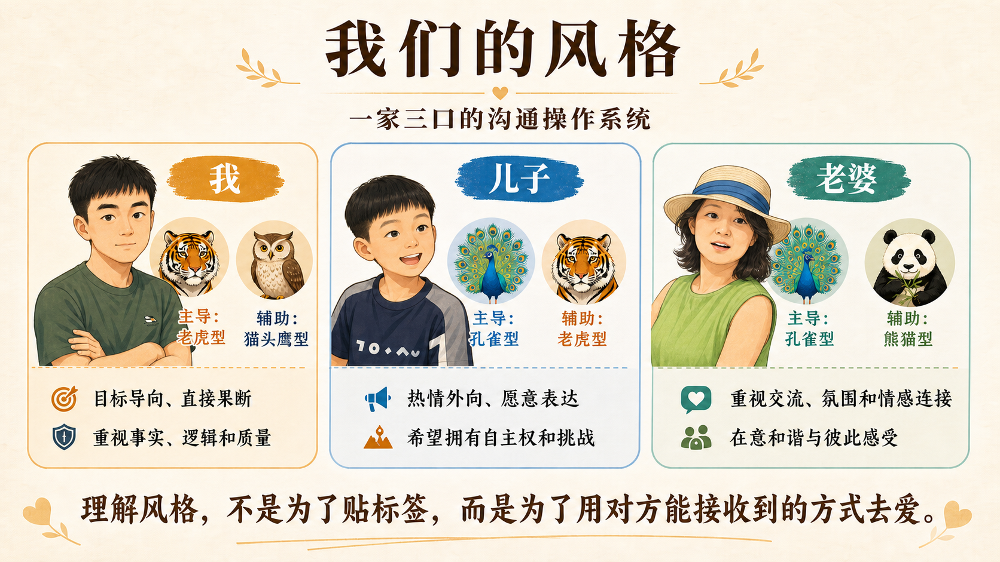

FAMILY × COMMUNICATION
我们的风格

在家庭里，性格分析重要的问题不是如何影响对方，而是：怎样让对方感受到爱、尊重和被理解。
四种动物并不是四个固定的人格标签。每个人都可能同时具有多种风格，也会因情境而改变。它们更像四种不同的沟通频道，提醒我们：自己习惯发送的信号，不一定是家人最容易接收到的信号。
1. 老虎型：用行动承担，也希望被信任
老虎型通常目标明确、行动迅速，遇到问题倾向于直接处理。在家庭里，他们常常不是通过反复表达感受，而是通过承担责任、解决问题和兑现承诺来表达爱。
他们最容易从这些方式中感受到爱与尊重：
- 相信他的能力与判断；
- 有事直接说，避免反复暗示和兜圈子；
- 把目标、边界和期待讲清楚；
- 看见并肯定他承担的责任；
- 在边界之内给予选择和自主空间。
相处时需要留意：老虎型的直接和高效率，有时会让家人感到被催促或被命令；他也可能在对方还需要表达情绪时，过早进入解决问题的状态。
老虎型真正想听到的往往是：
“我信任你，也愿意和你把事情说清楚。”
2. 孔雀型：用分享建立连接，也希望被看见
孔雀型喜欢表达、分享和互动，容易被有趣的人和事点亮。在家庭里，他们会通过讲故事、分享细节、制造气氛和邀请家人参与自己的感受来表达爱。
他们最容易从这些方式中感受到爱与理解：
- 放下手中的事情，认真听完他的表达；
- 对他的兴奋、委屈和想法给予真实回应；
- 具体地欣赏他的创意、努力和感染力；
- 给他表达、参与和共同创造的空间；
- 重要时刻不只是“知道了”，而是让回应被看见。
相处时需要留意：不要把丰富的表达简单理解成不聚焦，也不要在他刚刚分享时立刻纠正细节、泼冷水或要求马上得出结论。对孔雀型而言，回应本身就是关系的一部分。
孔雀型真正想确认的是：
“你愿意听我说，也真心看见了我。”
3. 熊猫型：用陪伴守护关系，也希望拥有安全感
熊猫型通常温和、有耐心，重视稳定、照顾和关系中的舒适感。在家庭里，他们常常通过陪伴、体贴、照顾日常和维持和谐来表达爱。
他们最容易从这些方式中感受到爱与安全：
- 保持稳定、温和而可信赖的回应；
- 重要变化提前商量，不突然强推；
- 发生分歧时降低音量，不用关系施压；
- 主动询问他的真实想法，给他表达不同意见的空间；
- 让他知道，即使意见不同，关系依然是安全的。
相处时需要留意：熊猫型不喜欢冲突，并不代表没有意见；“没有反对”也不一定等于“完全同意”。不要因为他温和，就忽略他的边界和需要。
熊猫型最需要确认的是：
“我们可以有不同意见，但我依然在乎你和我们的关系。”
4. 猫头鹰型：用认真减少风险，也希望被尊重思考
猫头鹰型重视事实、逻辑、准确和完整性。在家庭里，他们常常通过提前准备、核对信息、指出风险和把事情安排妥当来表达关心。
他们最容易从这些方式中感受到爱与尊重：
- 把事实、原因和背景讲清楚；
- 区分“我感受到什么”和“实际发生了什么”；
- 重要决定给他必要的思考时间；
- 尊重他对细节、质量和规则的重视；
- 不用“你想太多了”否定他的谨慎。
相处时需要留意：猫头鹰型的核对和追问，可能被家人理解为挑剔或不信任；而他也可能过于关注事实是否准确，忽略了对方此刻更需要情绪回应。
猫头鹰型真正关心的是：
“你尊重我的思考，也愿意把依据说清楚。”
一家三口生活在一起，并不意味着天然使用同一种沟通语言。我们三个人做了ASCSP行动教练风格测评，结果很有意思：
| 家庭成员 | 主导风格 | 辅助风格 | 一句话特点 |
|---|---|---|---|
| 我 | 老虎型 | 猫头鹰型 | 目标导向、直接果断，同时重视事实、逻辑和质量 |
| 儿子 | 孔雀型 | 老虎型 | 热情外向、愿意表达，也希望拥有自主权和挑战 |
| 老婆 | 孔雀型 | 熊猫型 | 重视交流、氛围和情感连接，也在意和谐与彼此感受 |
家庭关系的核心是：
这个人用什么方式，最容易感受到爱、尊重和被理解？
测评不是给家人贴标签，更不是判断谁对谁错。它只是帮助我们看见：每个人发出爱的方式，未必正好是另一个人最容易接收到的方式。
我：被信任、说清楚、一起把事情做好
老虎型让我习惯迅速行动、直面目标；猫头鹰型又让我看重事实、逻辑和完整性。对我来说，爱和尊重常常表现为：把事情说清楚、遵守约定、相信我的判断，同时在需要时给出准确的信息。
但我表达关心的方式也很容易变成“马上分析问题、给出方案”。我以为自己在负责，家人感受到的却可能是催促、纠正，或者“你没有先理解我”。
对我最有效的表达可以是：
- “我相信你会认真处理，需要我补充什么信息？”
- “这件事我们希望得到什么结果？边界是什么？”
- “我现在需要的是一个明确结论，还是先把情况讲完整？”
儿子：先看见我、听我讲，再和我一起行动
王牧熙的孔雀型需要表达、回应和连接，辅助的老虎型又意味着他不只想被照顾，也希望有选择权、挑战和行动空间。
他最容易从这些方式中感受到爱：有人认真听他的故事，对他的想法表现出真实兴趣，及时肯定他的亮点，并把他当作一个能够参与决定的人。
如果大人只给结论、只讲规则，或者在他兴奋表达时迅速纠正细节，他可能听到的不是“爸爸在帮助我”，而是“我的感受和想法不重要”。更适合他的顺序是：
- 先连接：“听起来你真的很兴奋／很不舒服。”
- 再邀请：“你最想让我听懂的是哪一部分？”
- 给选择：“这里有两个可以接受的方案，你想选哪个？”
- 落行动：“你准备先做哪一步？需要我怎样支持？”
老婆：有回应、有陪伴，温和地把真实感受说出来
妻子的孔雀型重视交流、热情和情感回应，熊猫型则更看重安全感、和谐、体贴与稳定陪伴。她可能不是先通过“问题有没有解决”判断自己是否被爱，而是先感受：你有没有认真回应我，愿不愿意站在我这一边理解我。
对她而言，有效的爱往往很具体：放下手里的事听她说，回应她的情绪，表达感谢，重要决定提前商量，发生分歧时保持温和，而不是突然进入辩论模式。
一句很有用的话是：
“这件事你希望我先听你说、陪陪你，还是一起想办法？”
这句话把“倾听”和“解决”分开，也避免我用自己最擅长的方式，替代她真正需要的方式。
我们一家最有意思的组合
家里有两位孔雀型，妻子和儿子都重视表达、回应和连接；而我的老虎型与猫头鹰型，更习惯关注目标、事实和下一步。这种组合并不意味着谁负责热闹、谁负责收尾，而是意味着我们判断“一次沟通是否有效”的标准并不完全相同。
1. 他们还在建立连接，我已经开始解决问题
对孔雀型而言，对话本身就是关系的一部分；对老虎型而言，对话常常是为了形成结论。家庭里的更好顺序是：先连接，再解决。
当妻子或儿子分享一件事时，我可以先不急着判断对错，也不急着给建议，而是先问一句：
“你现在希望我先听你说，还是一起想办法？”
只有先确认对方需要的是倾听、陪伴还是方案，我的“解决问题”才更可能被体验为支持，而不是打断。
2. 同样是孔雀型，妻子和儿子需要的回应并不相同
主导风格相同，不代表两个人需要完全相同的相处方式。辅助风格决定了他们表达之后，还在期待什么。
儿子是孔雀型加老虎型。除了被看见、被回应，他还希望拥有参与感、选择权和行动空间。对他来说，好的回应不只是“我听见了”，还包括：
“你准备怎么做？这两个方案里你想选哪一个？”
妻子是孔雀型加熊猫型。除了被看见、被回应，她还更看重关系中的温度、稳定和共同感。对她来说，好的回应不只是认可观点，还包括：
“我理解这件事为什么让你有这样的感受，我们一起面对。”
因此，同样面对孔雀型，我不能只使用一种固定话术。对儿子，要在连接之后给空间；对妻子，要在连接之后给陪伴。
3. 一次完整的家庭对话，需要同时照顾连接、选择和落地
我们三个人的风格放在一起：家庭对话不能只有情绪，也不能只有结论。
- 孔雀型提醒我们：有没有充分表达，有没有被认真回应？
- 熊猫型提醒我们：关系是否安全，彼此是否仍站在一起？
- 老虎型提醒我们：有没有形成选择，接下来准备做什么？
- 猫头鹰型提醒我们：事实是否清楚，理解是否一致？
可以把一次重要的家庭对话浓缩成三个步骤：
- 先连接：让每个人把感受和想法说出来，并确认自己被听见；
- 再选择：明确有哪些可选方案，让当事人保有参与感和自主性；
- 后落地：把事实、边界和下一步说清楚，但不急于把每次分享都变成任务。
理解风格，不是为了贴标签，而是为了用对方能够接收到的方式去爱。